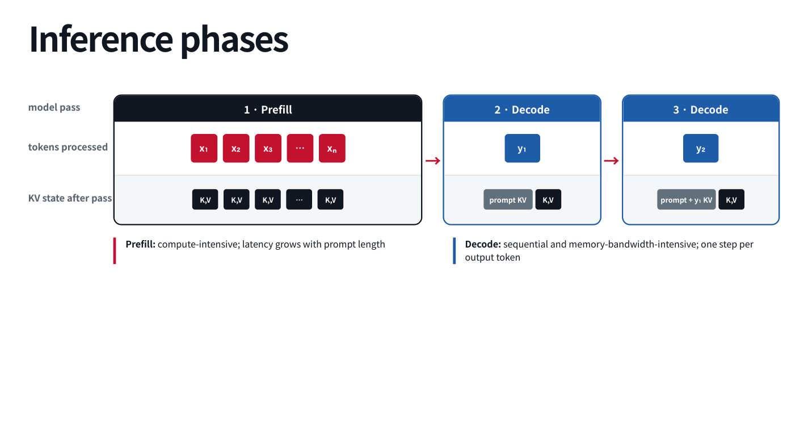
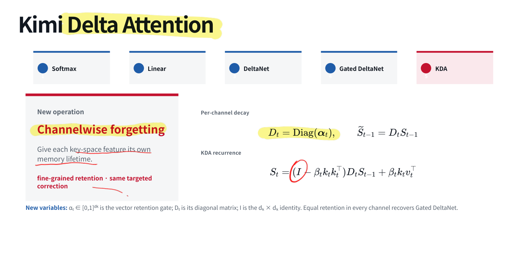
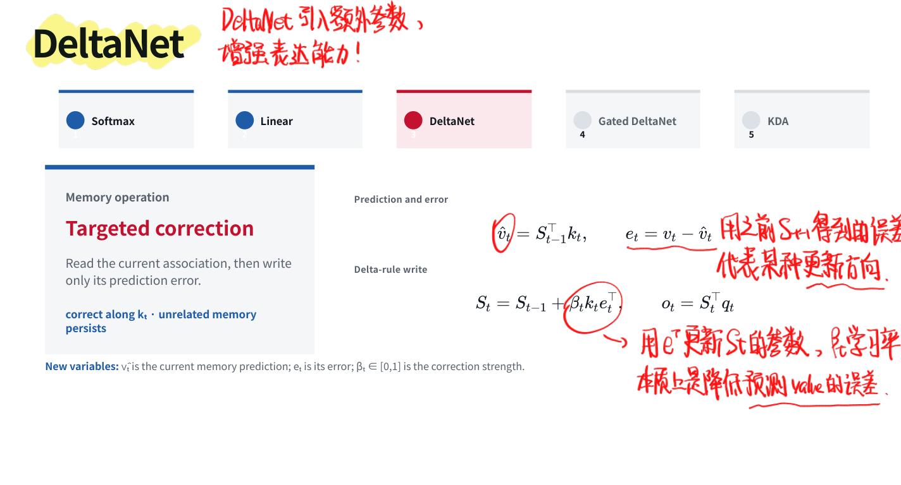
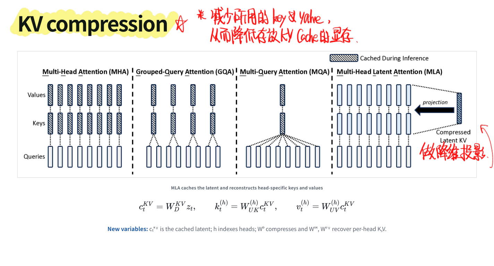
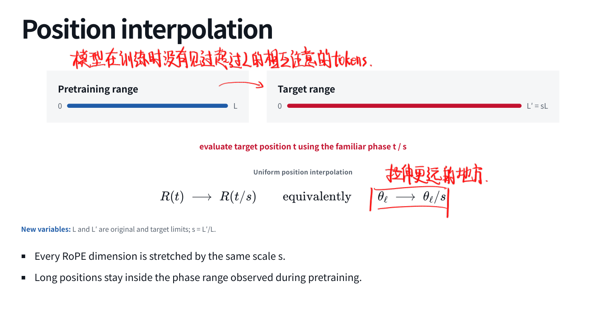
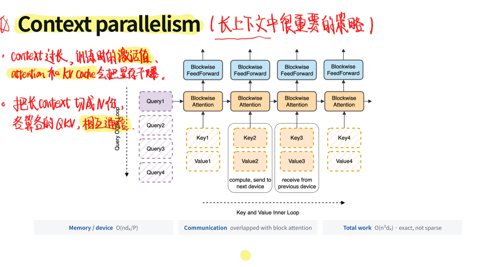
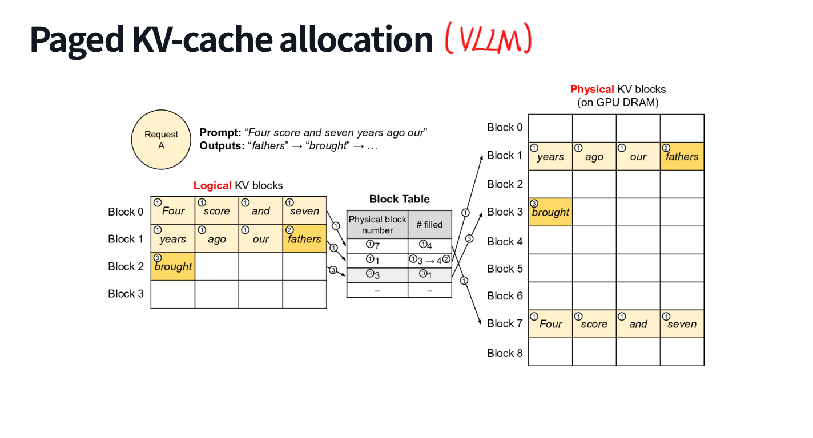
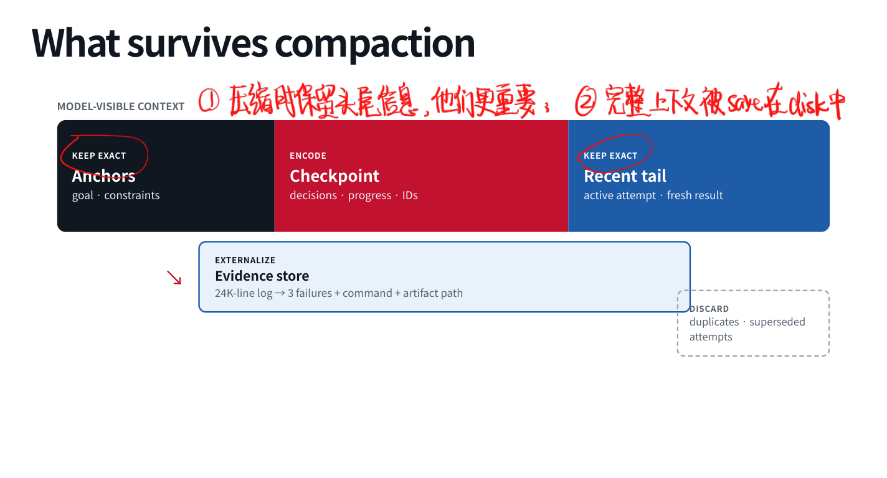

用 Agent 的时候最能感受到一件事：刚开始很灵，聊久了既慢又贵，还可能把刚说过的话忘掉。所以我原来一直觉得，Context Management 大概就是「快满了就总结一下」。这一讲才发现，模型架构、位置编码、训练数据、推理缓存和应用层压缩，全在解决上下文问题，只是各自管的部分不同。
3.1 历史线性增长，累计输入却不是
Agent 的输入包括系统指令、工具定义、任务、推理、调用参数和工具结果。在一组 1,500 个 OpenHands session 的统计中，平均长度约 77,922 tokens；工具调用和返回值占了很大一部分。用户那几句话反而不是主要负担，读代码和日志才是真的能吃）
假设固定前缀长 ，每轮增加 tokens，第 次调用输入长约 ，累计输入就是：
比如五轮分别输入 6K、11K、16K、21K、26K，累计已经是 80K。这里算的是逻辑上提交的输入量；实际重复计算和计费会受到缓存影响，不能把这条式子直接当成本账单。
长上下文还得分开看两个问题：Capacity 是模型能否使用所需证据，Efficiency 是系统是否负担得起。窗口能放 128K，不代表第 100K 个 token 附近的关键细节一定能被找出来。Needle-in-a-haystack 把证据放在不同深度，观察检索表现，正是在区分 advertised context 与 effective context；复杂推理和多处证据组合还要另外测。
3.2 Prefill、Decode 与推理指标
请求先进入 scheduler，经过排队、batch 与路由，再由模型计算。推理可以粗略拆成两段：
Prefill 一次处理已有输入的各位置，建立 K、V 状态；通常更偏计算密集，输入越长，首个输出前要做的工作越多。Decode 在已有 KV Cache 上逐步生成，每一步新增一个位置；具有序列依赖，长序列、小 batch 等情况下内存带宽压力很明显。
所以用户感受到的「慢」也有区别：
| 指标 | 含义 |
|---|---|
| TTFT | 请求到第一个输出 token 的时间，包含排队等开销 |
| TPOT | 相邻输出 token 之间的平均时间 |
| Throughput | 单位时间完成的 tokens 或请求数 |
| Cost | 普通输入、缓存输入、输出等不同部分的计费 |
降低 TTFT 和提高总吞吐也未必总是同一个调度目标。Agent 如果每轮都要先等一大段 Prefill，再调用一次工具，这种开销会被循环放大。

3.3 从全局 Attention 到局部访问
先统一一下记号。令 ，有：
因果 mask 允许位置 访问 。全局注意力要比较大量位置对，attention 部分的计算量随 增长；序列到百万长度以后，这个平方非常实在。
Sliding-window attention 把每个 query 限制在最近 个位置：
注意力比较量降到 ，固定 时对长度线性增长。但一个局部层不能直接读取窗口外的 token；多层间接传播也不能等同于随时精确检索全部历史。于是混合架构常用多个便宜的局部 / 状态更新层，穿插一个全局层，让模型定期访问远处信息。
几种值得记住的组合是 Gated DeltaNet + 稀疏检索、KDA + 稀疏或 MLA、Mamba-2 + GQA、滑动窗口 + GQA。局部与全局层可以按 3:1、4:1、5:1 等比例配置，也可以做成并行或交错分支。具体层数是模型配方，核心问题仍是 哪些信息被压进状态，哪些信息还能直接检索。
把几组架构配置放在一起看，区别会更具体：
| 模型配置 | 局部 / 状态计算 | 全局计算 | 配比或组织 |
|---|---|---|---|
| Qwen3.8-Flash-Next | Gated DeltaNet | QSA 稀疏检索 | 36 : 12 |
| GLM-5.3-Flash | KDA | DSA + IndexPool | 34 : 11 |
| Kimi K3 | KDA | dense Gated MLA | 69 : 24 |
| Nemotron 3 Ultra | Mamba-2 | dense GQA | 48 : 12 |
| Inkling-Small | 512-token window | dense GQA | 35 : 7 |
| DeepSeek-V4-Pro-0813 | 128-token window branch | 压缩稀疏 / dense | 分支交错 |
Mamba-2 属于状态空间模型，不能因为也维护有限状态，就把它和线性注意力的更新公式当成同一个东西。这个我还需要另开时间看，现在先放在状态计算这条路线里理解。
3.4 线性注意力到 KDA：怎样更新一块记忆？
这一段我觉得比背一串架构名有意思。普通 softmax attention 保存此前的 K、V，当前 query 逐个比较并归一化，decode 时的访问规模随历史长度增长。若用一个固定大小矩阵保存历史关联，就可以把过程写成递归。
下面用列向量 、，状态 。
Linear Attention：不断加进去
先看忽略 softmax 归一化的简化双线性形式：
关键是重排求和顺序，把历史存成固定大小的 。实际线性注意力还可能使用特征映射与归一化状态；这里的推导用来抓住可递归计算的原因。
但加法记忆有干扰：相似 key 对应不同 value 时，旧关联不会主动消失。删除 softmax 也改变了表达与归一化方式，不能把它当作完全等价、免费加速的替换。
DeltaNet：只写预测误差
DeltaNet 先用旧状态预测当前 key 对应的 value，再修正误差：
控制修正强度。它写入的是「现有记忆与目标的差」，因此比一味叠加更有针对性。对于单位范数 key， 时可以把该方向的关联校正到目标值；其他方向保留到什么程度，还与 key 之间是否相关有关。
Gated DeltaNet：先忘，再改
只纠错还不够，还可以先用标量门控衰减旧记忆：
控制全局保留， 控制当前关联的编辑。令 就回到 DeltaNet。这个遗忘机制与早年 RNN 的思路有点呼应，只是状态与更新规则已经具体得多。
Kimi Delta Attention：每个通道分别忘
KDA 再把标量保留门变成向量。令 ：
不同 key-space 通道可以拥有不同的记忆寿命；所有通道门值相同，就退化为标量遗忘。于是这条路线很好记：累计写入 → 根据误差定向纠正 → 整体遗忘 → 逐通道遗忘。公式比名字更能告诉我它到底改了什么。


3.5 Sparse Attention 与 KV Compression
稀疏注意力仍保留按位置访问的思路，但只计算选中集合 上的注意力。固定模式可以是局部窗口加全局位置；内容相关模式则用 selector 给候选 key 打分，选择 top-K，再在保留集合上做 softmax。
固定模式成本可预测，却不能根据 query 改变范围；内容选择更灵活，却会出现 selector 漏掉证据后，后面的精确注意力也无从补救 的问题。轻量检索器先筛，再在少量 token 上做更贵的 attention，是我理解 DSA 这类设计的入口。
KV compression 改的是另一个维度：每个位置到底存多少状态。MHA 为多个头保存 K、V；GQA 让一组 query heads 共用 K、V；MQA 进一步共用。MLA 则保存低维 latent，再通过投影恢复或在计算中等价使用各头需要的表示。示意为：
这里省的是缓存表示的大小；实际 MLA 还涉及位置相关分量与计算重排。窗口、稀疏选择、固定状态和 KV 压缩可以组合，因为它们处理的瓶颈不同。

3.6 位置编码与长度外推
Absolute position 直接把位置向量加到 embedding：。固定正弦编码可解析地定义任意位置，学习式绝对位置表则有固定索引范围。能定义新位置，也不代表模型在那些位置训练过。
RoPE 对 Q、K 的二维子空间施加旋转，V 保持不变：
点积因此带有相对位移信息。问题在于推理长度远超训练范围时，旋转相位与距离分布也变了。
Position Interpolation 把目标长度 的位置映回原范围，使用 ，等价于把各频率除以 。长位置落回熟悉范围，但所有维度一起拉伸，也会影响局部区分。

YaRN 按频率选择插值强度：长波长维度充分插值，短波长维度尽量保留局部相位，中间过渡：
它还调整 attention temperature 来缓和扩展后的熵变化。常见的与 有关的温度配方来自特定模型实验，不是对所有架构成立的常数定律。
NoPE 则不显式添加位置编码。我原来学 Transformer 时很容易记成「没位置编码就不知道顺序」，但那句话漏掉了结构条件。因果计算中不同位置能访问的前缀不同，循环结构也天然按时序更新，顺序信息可以从中形成。NoPE 避开了一部分位置编码外推问题，却仍需学习长距离行为，不能把 RoPE 删了就宣称百万上下文毕业了）
不同架构的扩展路线也因此不完全相同：Qwen3.8-Flash-Next 采用 partial RoPE，并用 YaRN 从原生 262K 扩到 1M；DeepSeek V4 结合逐级训练与 YaRN；Kimi K3 从 8K、64K、256K 训练到 1M，使用 NoPE；GLM-5.3-Flash 主 attention 采用 NoPE，也不需要照搬 RoPE rescaling。Nemotron 的状态层提供隐式顺序，Inkling 则使用学习式相对位置表示。这里比较的是机制，不能把所有长窗口都归因于「调了 RoPE」。
3.7 长上下文训练：数据从哪来？
训练通常采用 short-to-long curriculum，先用较短序列建立能力，再继续训练长文档，最后加入更长的任务与合成依赖。比如从 4K / 8K 逐步扩展到 32K / 64K、128K / 256K，再到百万级；具体路线与架构、数据和计算预算有关。
几类数据不能混为一谈：
| 数据 | 主要价值 | 要小心什么 |
|---|---|---|
| 长文档、书籍、论文、代码仓库 | 自然的跨段与跨文件依赖 | 长不等于有用，清洗与筛选仍重要 |
| Packed examples | 提高序列利用率 | 样本边界、attention 隔离与泄漏 |
| Agent trajectories | 长程状态跟踪、工具反馈、恢复 | 轨迹是否真的要求利用远处信息 |
| 合成任务 | 控制证据距离、干扰与依赖 | 不要只学会某种人工检索模板 |
我关心的「数据从哪来」，答案因此不是简单找几个大文件：既需要连贯的长来源，也需要答案确实依赖远处证据的任务。Kimi 一类路线逐级提高长度，GLM 一类配方组合仓库文件、issue、PR、diff 与合成依赖，Nemotron 的长文 QA、多文档推理和合成表格又是另一种组合。各家配方不必照抄，数据要逼着模型使用长距离信息才有意义。
长序列训练还会遇到单卡显存限制。Context parallelism 沿序列切分，每张设备处理一部分 query / 状态；Ring Attention 一类方法让 K、V 块在设备间传递，边通信边计算局部 attention，再合并结果。序列相关存储可分摊到约 ，但全局精确 attention 的总工作仍是二次的。它解决分布式执行与显存压力，没有把数学问题变稀疏。

3.8 KV Cache 与 Prefix Cache
一次 decode 中，旧位置 K、V 已经算过，可以直接复用，只计算新增位置。Agent 的下一次调用又会带上旧历史；若服务端支持跨请求前缀缓存，相同前缀也可以继续复用。工具结果是新的输入，要先计算，之后才加入可复用前缀。
缓存收益包括少做 Prefill、降低 TTFT，也可能降低缓存命中部分的 API 费用。但物理计算成本与 API 定价是两件事；缓存读取、创建、保留期限和失效规则也可能不同。计算与加载缓存哪个更合算，还受硬件、长度和复用次数影响。
底层还有几项组织方式：
PagedAttention 把逻辑 KV 序列映射到物理块，像分页一样按需分配，避免必须为每个请求预留连续大块空间。RadixAttention 用前缀树组织共享状态，相同前缀可以匹配与复用，分叉处拆分，空间不足时按策略淘汰。Cache-aware routing 则在 worker 的前缀命中与排队压力之间权衡：缓存最多的节点不一定总是最快，因为它可能已经堵死了。

对应用而言，直接能做的是保持 system、工具列表与固定示例稳定，把动态消息追加在后面，避免无意义地调整工具顺序或在开头插入时间戳。最后还得测 cached tokens、TTFT 和淘汰情况；「我觉得应该能命中」不算指标。
3.9 Compaction 是状态估计
缓存没有缩短模型可见历史。历史太长、噪声太多时，仍要 compaction。假设 CI 因端口冲突超时，Agent 读了 24K 行日志，设置 --workers=1 后测试通过，下一轮需要的是目标、原因、已验证设置与日志位置，而不是整份重复报错。
令完整历史为 ，预算为 ，压缩状态为 ：
这里表达的是行为保真目标：保留足以支持未来动作的信息。并不是把原文改写得顺口，就自动达到了这个条件。

我会把内容分成五类：目标与硬约束精确保留；进度、决策和 ID 整理成 checkpoint；当前尝试与最新结果保留细节；长证据外存并留可检索路径；重复和已被替代的尝试精简。原始历史最好仍可恢复，尤其是路径、版本、预算这些信息，不应该被压成一团模糊的概括。
真正的 compaction policy 还得定义：什么时候触发，给下一轮输出留多少空间；压哪一段、怎样保护开头和近期消息；用自然语言摘要还是结构化状态替换；如何在合法的轮次与工具边界切分；压缩失败时保留原历史、重试还是重置。
重复压缩尤其容易漂移：CUDA 12.4 → CUDA 12.x → recent CUDA → 约束消失。下一次摘要继承上一次摘要，错误也会继承。所以重要锚点要复制准确，保留最近尾部，并能够检索原始证据。
评价压缩不能只算节省比例。可以先在任务中放入约束、决策和产物位置，再应用实际压缩策略，继续执行，检查状态召回、后续决策、任务成功率、成本，以及多次压缩后的稳定性。压完像没失忆一样继续干活，才是我们真正想要的效果。